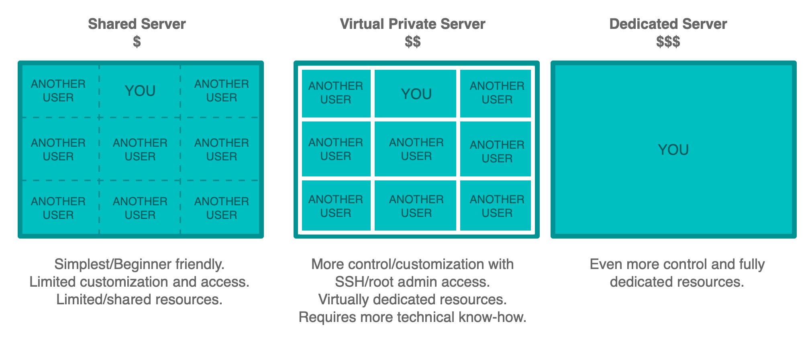
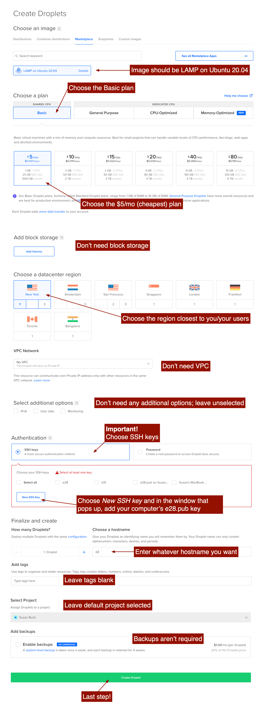
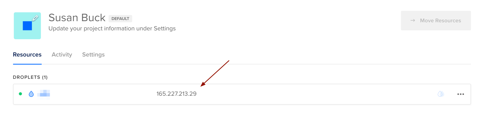

DigitalOcean setup
So far we have two instances of our e28 repositories:
- One on our local machines
- One on Github.com
The third and final piece of the puzzle we need to complete your workflow is a production server where you can publish your work online so that it’s available for the world to see.
{kind=link}
The server platform we’ll use in this course is DigitalOcean which offers virtual private servers (VPS) of varying sizes and specs.
The following diagram summarizes the differences between 3 common server types: shared, virtual private, and dedicated.
Droplet Pricing
DigitalOcean calls their virtual servers Droplets; each Droplet that you create is a new virtual server for your personal use.
In this course, you’ll use one single Droplet to host all of your class projects.
The base plan which costs $5/month should be enough to serve your needs for this course. For the duration of the semester (4 months), your total cost will be $20. Alternatively, the Github Education Student Developer Pack will get you $50 in DigitalOcean credits which would cover your costs for the semester.
New Droplet
DigitalOcean is a Virtual Service Provider (VPS) - meaning each server instance we create is its own isolated instance on DigitalOcean’s servers. This means we get to choose what Operating System and software our server is set up with.
This OS and complimentary software is referred to as a stack.
In this course, we’ll use a LAMP (Linux, Apache, MySQL, PHP) stack, which can be set up by visiting this page and clicking Create LAMP Droplet.
On the screen that follows, make your Droplet settings match options shown in the screenshot below.
As part of the settings, you will need a copy of your computer’s e28.pub
public
key, so as a reminder, here’s the command to quickly view that file:
Mac:
$ cat ~/.ssh/e28.pub
Windows:
$ cat %homepath%/.ssh/e28.pub
Settings for new Droplet: 
Log in to your new server droplet via SSH
Once your Droplet is created, make note of its IP address:
From your local command line, SSH into your DigitalOcean droplet using the username root and
the IP address:
$ ssh root@your-digital-ocean-ip-address
When you first connect, you’ll see the following message indicating it’s a connection your computer does
not recognize. Type yes and hit Enter to confirm the connection.
The authenticity of host '[your-ip-here] (your-ip-here)' can't be established.
RSA key fingerprint is 4a:6e:8b:f2:39:27:ec:05:e1:46:e2:a6:80:e4:e9:d3.
Are you sure you want to continue connecting (yes/no)? yes
After you hit enter, if your SSH key is set up properly, you should be logged into your server. You should not be prompted for a password (the SSH key is your security credential for connecting, so no password is required).
SSH Key: DigitalOcean Server <-> Github.com
In order to communicate between your DigitalOcean droplet and Github, you need to set up one final SSH key.
While still SSH’d in to your DigitalOcean droplet, generate a new SSH key:
$ ssh-keygen -t rsa -C "your@email.com"
Press enter when it asks you to name the key (this will use the default name of id_rsa):
$ Enter file in which to save the key (/root/.ssh/id_rsa):
Press enter when it asks you to enter a passphrase (leave blank):
$ Enter passphrase (empty for no passphrase):
Press enter when it asks you to confirm that passphrase (leave blank):
$ Enter same passphrase again:
You’ll now have two new files in /root/.ssh/:
-
id_rsa -
id_rsa.pub
Run the cat command to view the contents of the public key
(id_rsa.pub), and copy it into a new key in your Github.com account.
$ cat /root/.ssh/id_rsa.pub
Finally, test that the SSH keys work by running this command:
$ ssh -T git@github.com
If all went well, you should see a message like this:
Hi susanBuck! You've successfully authenticated, but GitHub does not provide shell access.
When we created a SSH key pair on our computer’s we gave them a custom name: e28.pub. We
used a custom name to avoid overwriting any existing keys you may have previously set up on your
computer.
When we created a SSH key pair on the DigitalOcean server (above) we used the default name:
id_rsa.pub. Because this is a brand new server and will be used in isolation, there
was no
risk of overwriting an existing key.
Explore your new server
Set up of your new server is complete, so lets take a look around and see what files you have to start with.
First, change directories into your document root which is located at
/var/www/html/:
$ cd /var/www/html
$ ls
You should see one file: index.html
If you access your site in the browser (via the IP address DigitalOcean gives you), you should see the
default contents of index.html which looks like this:
Clone your repository
Now that you’ve set up your server and established the document root is at /var/www/html/,
your next step is to clone your repository there.
$ cd /var/www/html/
$ git clone git@github.com:username/e28.git
Your directory structure on DigitalOcean should now look like this:
-
/var/www/html-
e28/ -
index.html
-
In the next note set, production domains, we‘ll learn how to set up domains to point to the applications within your e28 repository.
Config & Logs
Apache error and configuration files can be found in the following locations on your DigitalOcean servers:
- Apache error log:
/var/log/apache2/error.log - Apache configuration:
/etc/apache2/httpd.conf